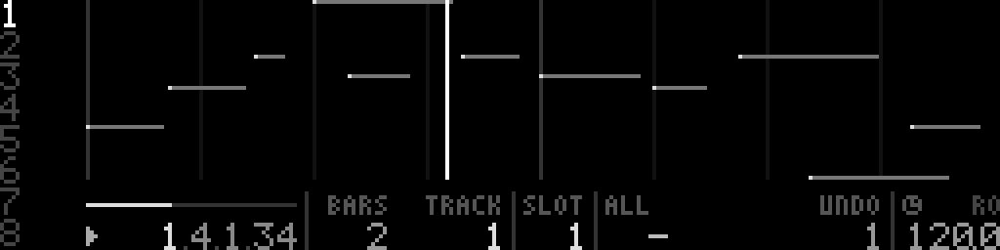

Choose where the next part will play
Each of the eight tracks has eight loop slots and plays one slot at a time. Put a verse bass line in slot 1 and a chorus bass line in slot 2 of the same track to switch between them. Put the chords on another track to hear the chords and bass together.
- Tap the bass track’s button in track select mode, or tap TRK to move to the next track. Check the TRACK number on the OLED.
- While the verse plays, tap the chorus slot. Its button flashes and its notes appear on the piano roll. The countdown shows how much of the verse remains.
- The chorus begins when the verse loop ends. To bring the chorus in sooner, double-tap its slot button. It starts on the next division of the launch grid. The chords on the other track carry on.

With the global transport stopped, tap a slot containing a loop to select it for the next start. With the clock running and that track stopped, the same tap starts its loop on the launch grid. Tapping the currently playing slot mutes or unmutes its track if no other slot is waiting to play. Tapping an empty slot arms it for recording.
Set the launch grid
The launch grid sets when a queued loop can start. By default, a double-tapped slot starts on the next sixteenth note. To choose a grid for all tracks, send one of these commands over USB serial.
!ENGINE launch-q 16selects sixteenth notes.!ENGINE launch-q 8selects eighth notes.!ENGINE launch-q 4selects quarter notes.!ENGINE launch-q barselects the downbeat of each bar.
The looper remembers the setting after power-off. A single tap from a playing loop still waits for loop end.
To jump within a playing loop, tap one of the 16 step buttons for a sixteenth-note position in the current bar. The eight bar buttons jump to bars in the current group of eight. The jump takes effect on the next grid division. If you shortened the loop, expand its range before jumping to a recorded bar outside it.
Mute, solo or stop
- Mute. Double-tap a track button to mute or unmute it. To mute several parts, tap EDIT once. The eight track buttons now mute and unmute with one tap each. A bright track LED means it contains a loop and is unmuted, a dim LED means it contains a loop and is muted, and a dark LED means it is empty. Tap EDIT again to select tracks.
- Solo. Hold a track button for about 0.6 seconds and release. Hold it again to cancel its solo. More than one track can be soloed.
- Stop one track. Tap the track play/stop control (MIDI note number 40 on channel 16). Tap again to start its selected loop on the launch grid.
- Stop all tracks. Tap global transport (MIDI note number 39 on channel 16). With internal clock, the next start plays the selected loop on each unmuted track and starts an armed take.
When an external sequencer supplies MIDI Clock, global transport stops the looper’s tracks while the sequencer keeps running. Tap it again to rejoin on the next downbeat. If the external transport has stopped, starting the looper locally uses the next incoming clock pulse as the downbeat.
Make a variation and keep the original
- Hold the slot button for the loop you want to copy for 0.6 seconds. Its LED pulses and the COPY window opens.
- Release the button. Choose another track if needed, then tap the slot where the copy should go. Choose an empty slot for a new variation. If the slot already holds a loop, the copy replaces it. Its LED flashes three times.
- Edit or overdub the copied loop to make a variation. To undo the paste, double-tap REC on the slot you copied to. To cancel before pasting, tap the original slot once or wait five seconds.